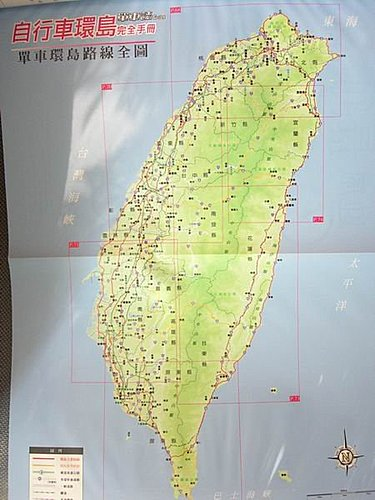

終於，河東獅的第一次團隊環島行程要開始了．
本來只是我個人的單純想法，想要騎車環島，看看這座島嶼的美，說是壯舉或夢想都有點沉重，較貼切的心境是想去做件會讓自己覺得很舒服的事，或者說會讓自己能夠回味的事，甚至在當初，是與同樣早已是中年的山哥在騎車享受清風明月之餘，冒出來的約定說一起去環個島吧的囈語．
然而，在小獅的促成並積極規劃下，這樣的想法竟然可以成真，並且有著1213．小超．貓哥．小揚．木白及遠在台北的麗麗的熱情參與，真是感恩．而行程中大夥的相互打氣，陪伴照應，分享經驗及談笑調侃，更是至今仍令人回味無窮哩
一早，將行李打包妥當後，騎上車，往集合地點的鳳山出發，雖然氣象報告預稱往後一週的天氣不穩，會有雷雨之類的情形，但大夥討論後仍決定如期進行．前晚，將車騎往車行請老闆幫忙檢修時，提到要環島而天氣不穩，年輕的店員一面為我檢修車子一面說著〔你要去環島哦〕的羨慕口氣時，突然冒出〔為何要有天氣好不好這樣想法〕的話語，並說著〔環島本來就會碰到各種不是事先可預期的狀況啊，即使規劃完善，但也許道路突然施工要改道呢，所以去騎就對了〕很有哲理的話，激發了自己正面思考的觀念，在往後的9天行程中，更有著不可思議的助益哩．
約0720時到達集合地點時，媬姆車的肉粽兄及吳師傅均已先到在整理車架，接著山哥．木白．1213．麗麗．小揚及在宿舍居住的小獅．小超及貓哥均陸續到達，一番打趣及談笑後，大夥即整裝準備出發，還好，今日天氣雖仍陰霾，但也因而涼爽，少了些騎車時的悶熱困擾，也相對的增加了愉快的心情呢．不過，對從台北遠道而來的麗麗而言，即使在躱在雲層後的南台灣太陽的威力仍是存在似的，全身包括眼晴部位，仍以各類防護措施為對抗，彷佛柏薩斯在對抗美杜莎的小心，相較於本人認為環島就是要曬太陽，沒變黑就失去環島意義的謬論，師徒的見解明顯有差異，哈哈
在出發前的集體合照及小獅的詳細解說今日行程並殷切叮嚀騎車注事項後，大夥即在小獅的 帶領下，往南台灣方向行進，今日行程預計要到屏東的四重溪，中午在先車城附近的熊家豬脚用午餐，下午再續往關山．後壁湖及龍鑾潭等地方遊走一番，所以早上的行程預估約有80公里，下午則約30公里，而大夥雖曾有前往台南或牡丹．旭海等地騎車等一日破百的經驗，但要正式上路環島還真有點不知前途如何的忐忑呢，不過，〔騎就對了〕的正面思考能量適時進入腦海，雖無關公過五關斬六將的豪勇，卻有著林強不畏困難的志氣，所以就一路向前行了．
由鳳山．大寮．一路往南，再接由林園．東港．佳冬．枋寮．枋山．楓港到車城，南台灣的美麗風景逐一浮現，特別是當可以看見台灣海峽的海水時，心情隨著美麗海岸線的出現而飛揚起來，第一次用如此的速度，如此的心倩來欣賞這片海面及它所呈現的變化，潮水的起落，拍擊的聲響及天空的壯闊，對應著一路向前行的大夥的心情，這畫面及心境，相信沒有經歷過的人是很難去體會的．所以，〔環島是件人生一定要做的事〕這句環島過的人會說的經典對白，著實是有著它的意義的．
但３月的南台灣也並不完全只讓人享受著早春的喜悅而已，強勁的季風，特別是落山風，也讓第一次環島的大夥們見識並吃盡了苦頭，真實體驗了它的威力．特別是在枋山到楓港這段，由太平洋越過山而來的胡德夫所唱的〔大平洋的風〕，並非徐徐吹來，也無母親的溫柔，反倒是像在測試著大夥耐力．意志及體力的五千公尺障礙賽，不時著以它特有的表達〔愛意〕方式，或在前方或在側面，衝擊著已搖晃不停且用盡力氣仍無法使車前進〔任何物理定律的解說都無法使我相信的這現象，當然，此時此刻，也沒有所謂人定勝天的道理〕的車及人，我甚至因而有車子往後退並向後行進的窘象哩，顯然的，這段平常用汽車行經並覺得還不錯的路段，在親身以單車面對時，竟是完全不同的感受呢，而之前在汽車上談著〔往後環島時要騎這段路吔〕的輕鬆口氣，此時成了相對反諷的笑談了．
一路的騎騎停停，一路的欣賞美景，一路的享用肉粽兄用心準備的口糧，一路的持續進入7-11喝著山哥所謂人間美味的思樂冰〔山哥常說7-11的存在是上天的傑作之類的讚美詞〕，終於到了車城地區．依照原定行程是要到熊家豬脚用餐，但長途騎車所產生對冰品的愛戀及渴望，讓大夥們〔至少我及山哥．1213．小獅．貓哥〕己暗自決定在用餐前定要吃吃車城褔安宮附近的綠豆蒜才行〔明知對身體不好，但仍如鴉片般的無法割捨啊〕，所以二話不說，先轉進黃家綠豆蒜連吃它兩碗，方肯罷休，然後，帶著滿足的表情及略漲的肚子，前往熊家豬脚用餐．
用完午餐後，酒足飯飽之餘，略為休息並享用肉粽兄再次精選的高山茶後，續往關山，後壁湖一帶遊走，天氣依然陰霾，風勢還是強勁，剛出熊家豬脚大門，就已無法行進，只有用著剛吃完飯的所有體力，奮力向前，經過此番搏鬥，終旒有漸入佳境的感受，大夥在萬里桐．紅柴坑．白沙等地點的鄉間道路上騎行，風是吹面不寒的清涼，景是初春發芽的新綠，讓大夥享用了大地無盡藏的美景，也愉悅了早上略為疲憊的身體，而在悠活度假村的捷安特車行，大夥不僅補充了往後行程中極為有用的超值雨衣，山哥所稱〔非有豹紋腿套不買〕及1213買了〔後腿肚為透明網狀腿套〕的結果，更是增添往後一路上大夥相互調侃的話題．
在強勁的季風陪伴下，大夥終於陸續騎到今日的預定集合點－龍鑾潭，時間已是傍晚，龍鑾潭在強風吹襲及夕陽光線的照耀下，呈現出不同於一般日子的美，我與山哥．1213及貓哥等利用此等人的些許空檔，坐在潭邊，看著潭邊葦草如波浪般的起伏，看著夕陽光線的逐漸退去，感受著這〔天地靜好〕的美妙時刻，想著第一天的行程就要在這時分結束，還真是令人感動呢
利用媬姆車接送到今晚的預定住宿地點南台灣大飯店，有溫泉可泡哩，感謝小獅的貼心安排，知道這第一天的勞累非比尋常，定要好好休養一番，所以除了飯店的大餐外〔由原先的2,000元加碼至2,500元哦〕，更讓大夥充分享受了溫泉熱氣的調理，為明天的堅苦行程〔嶹卡，我來了〕做準備哩
〔以下照片，因本人為電腦白痴，故無法按順序重排，只好將就將就，就醬子用囉，請多包涵〕
行經東港大鵬時灣的諸位騎士或吳師傅所說的我們都是〔車手〕
在大寮路上的諸位〔車手〕，臉上仍可看到初出發時的微笑
第一晚住宿的飯店及當晚的超級美食
河東獅精神領袖宗哥雖無法躬逢其盛，仍致贈紅酒3瓶，向大家加油打氣--真是感恩。
希望下一次的三橫一豎之旅，宗哥能出夠參加。
龍鑾潭的天地靜好
在悠活度假村的捷安特車行，在此度假村有單車旅館的設備，可自備單車或租車哦
墾丁公園的標誌，因已酒足飯飽，故臉色仍是微笑，可見食物對人的心境的影響是無限大的
中午用餐的熊家豬脚，造型是否有像豬脚呢，蹄的部位？
墾丁公園的標誌，因大夥已是酒足飯飽，故臉帶微笑，可見〔馬無糧草不肥，哈哈，完全不適當的比喻〕確屬真理啊
知道為何會有微笑了吧
綠豆蒜，如鴉片般連吃兩碗的誘惑
這位〔車友〕呢，還沒開始上路就已有暴胎情形發生，不知是故意或是過失，從他與所謂邱先生的相同笑容來看，的確值得深思深思，哈哈
山哥所稱上天的傑作，其中包括思樂冰及草莓雪榚，均屬〔我的最愛〕
大鵬灣的自行車道，對已經歷環島的大夥來說，真是桌上的小蛋糕哩
本團的兩位勇敢女車友，說真的，比起我們謂的男車友，大夥真的自嘆不如哦
準備出發中的一景，車很讚，人很棒
準備的地圖，環島後還有可閃閃發夜光的台灣造型水晶可供留念哩

行李的準備清單，讓大夥安全出發並安全返回
環島1
可不可以不要叫我「1213」，這有點像看守所內的編號？﹗